25+ Christmas Breakfast Recipes for a Cozy Holiday Morning
📌 Save to Pinterest
Christmas morning deserves a breakfast that feels like a gift: something warm from the oven, something sweet, and something you can make ahead so nobody is stuck at the stove while the stockings are opened. This roundup gathers twenty-five Christmas breakfast recipes — overnight casseroles, spiced pancakes, cinnamon rolls, muffins and lighter plates — all made for a cozy holiday morning. Make one showpiece the night before, add a quick batch of pancakes in the morning, and the table takes care of itself.
How to plan a cozy Christmas breakfast
Pick a mix, not a single style: one make-ahead bake, one griddle recipe, and one lighter plate cover every taste. If the morning is busy, lean on overnight recipes — casseroles, French toast bakes and oats that wait in the fridge until you need them. If you are feeding a crowd, choose bakes that serve from one dish, like a breakfast casserole or a cinnamon roll wreath, and let everyone help themselves. And if you want the house to smell like Christmas before anyone wakes up, start with cinnamon, ginger and maple.
Good to know: Everything is written in American English, and measurements use US customary units — cups, tablespoons, and Fahrenheit — for cooks in the United States. Always follow safe food-handling guidance, and check labels for allergens when cooking for others.
Food safety: cook the breakfast casserole to 165°F (74°C) in the center, ground sausage to 160°F (71°C), and egg dishes such as quiche to 160°F (71°C). Check with a food thermometer.
Casseroles, pancakes & scones
These are the recipes that do the work while you sleep — assemble them the night before, bake in the morning, and serve straight from the dish.
1. Overnight Cinnamon Roll Casserole

Refrigerated cinnamon rolls soak overnight in a sweet custard of eggs, milk, vanilla, cinnamon, and maple syrup, then bake into a soft, gooey casserole with crisp golden edges. Every spoonful tastes like the warm center of a cinnamon roll, sticky and spiced. Assemble it tonight, bake it tomorrow morning, and serve it warm with the icing drizzled over the top.
Ingredients
- 2 cans refrigerated cinnamon rolls
- 4 eggs
- 1/2 cup milk
- 1 tsp vanilla
- 1/2 tsp cinnamon
- 1/4 cup maple syrup
Directions
- Grease a 9x13-inch baking dish. Open both cans of cinnamon rolls, set the icing aside, and cut each roll into quarters. Scatter the pieces in the dish.
- In a medium bowl, whisk the eggs, milk, vanilla, cinnamon, and maple syrup until smooth and fully combined.
- Pour the custard evenly over the roll pieces, pressing them down gently with a spatula so every piece is coated.
- Cover the dish tightly with plastic wrap or foil and refrigerate overnight, for at least 8 hours.
- In the morning, set the dish on the counter while the oven preheats to 350°F, about 15 minutes.
- Bake uncovered for 30 minutes, until the casserole is puffed, golden brown, and set in the center.
- Rest 5 minutes, then warm the icing briefly and drizzle it over the top. Serve warm.
2. Gingerbread Pancakes with Maple Butter

These pancakes carry the full warmth of gingerbread, with ginger, cinnamon, and cloves folded into a fluffy batter sweetened with molasses. They come off the griddle dark golden and fragrant, with soft centers and lightly crisp edges. A pat of maple butter melts into each stack, and a dusting of powdered sugar makes them look like a snowy Christmas morning.
Ingredients
- 2 cups flour
- 2 tsp baking powder
- 1 tsp ginger
- 1 tsp cinnamon
- 1/4 tsp cloves
- 2 eggs
- 1 1/2 cups milk
- 2 tbsp molasses
Directions
- In a large bowl, whisk together the flour, baking powder, ginger, cinnamon, and cloves until evenly mixed.
- In a second bowl, whisk the eggs, milk, and molasses until smooth.
- Pour the wet ingredients into the dry ingredients and stir gently just until combined. A few small lumps are fine; do not overmix or the pancakes will turn tough.
- Heat a buttered griddle or large skillet over medium heat until a drop of water sizzles.
- Scoop 1/4 cup of batter per pancake onto the griddle, leaving space between them. Cook for 2 to 3 minutes, until bubbles form on the surface and the edges look set.
- Flip each pancake and cook 1 to 2 minutes more, until golden brown and cooked through. Keep finished pancakes warm in a low oven while you cook the rest.
- Stack the pancakes and serve with softened maple butter and a dusting of powdered sugar.
3. Cranberry Orange Scones
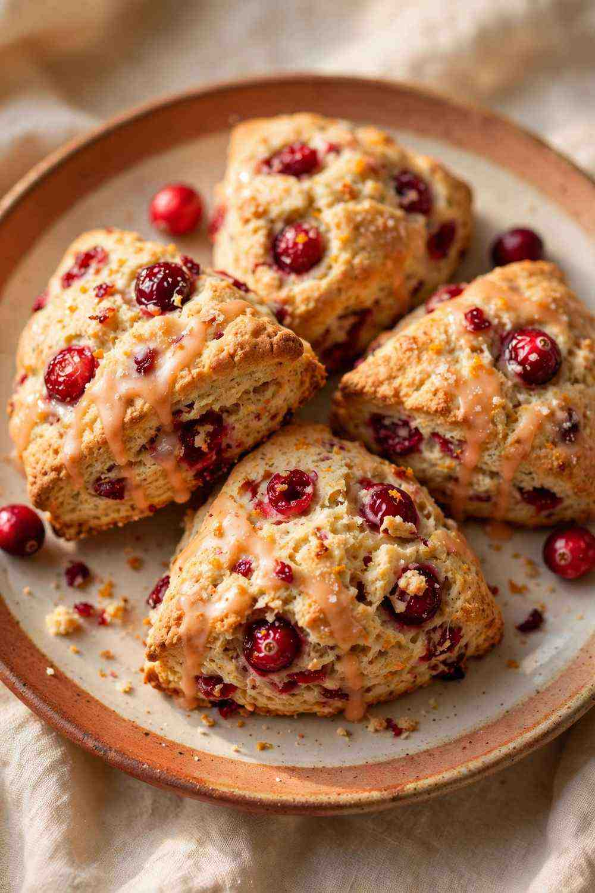
These buttery scones bake up tender and flaky, studded with tart fresh cranberries and bright orange zest. The cream in the dough keeps the crumb soft, while the edges turn crisp and golden in a hot oven. They are best eaten warm from the oven, split open with butter, and they make the whole kitchen smell like Christmas morning.
Ingredients
- 2 cups flour
- 1/3 cup sugar
- 1 tbsp baking powder
- 1/2 cup cold butter
- 1 cup fresh cranberries
- zest of 1 orange
- 2/3 cup cream
Directions
- Preheat the oven to 400°F and line a baking sheet with parchment paper.
- In a large bowl, whisk together the flour, sugar, and baking powder.
- Cut the cold butter into cubes and work it into the flour with a pastry cutter or your fingertips until it looks like coarse crumbs with a few pea-sized pieces left.
- Stir in the cranberries and orange zest, then pour in the cream and stir just until a shaggy dough forms.
- Turn the dough onto a floured surface, pat it into a round about 8 inches across and 1 inch thick, and cut it into 8 wedges.
- Place the wedges on the baking sheet 2 inches apart and brush the tops with a little extra cream if you like.
- Bake for 18 minutes, until the scones are risen and golden brown on top. Cool for 5 minutes on the sheet, then serve warm.
4. Eggnog French Toast

Thick slices of brioche soak in a rich eggnog custard with vanilla and nutmeg, then fry in butter until the outsides are crisp and golden and the centers stay soft and creamy. Every bite tastes like the holidays, warm and lightly spiced. Serve it with maple syrup and an extra dusting of nutmeg for a Christmas morning that feels special.
Ingredients
- 8 thick slices brioche
- 1 cup eggnog
- 2 eggs
- 1 tsp vanilla
- 1/2 tsp nutmeg
- butter for frying
Directions
- In a wide, shallow dish, whisk the eggnog, eggs, vanilla, and nutmeg until smooth.
- Lay one slice of brioche in the custard and let it soak for about 20 seconds per side, until saturated but still holding its shape.
- Melt a generous knob of butter in a large skillet over medium heat until it foams.
- Add the soaked slices in a single layer without crowding the pan, and cook for 2 to 3 minutes per side, until deep golden brown.
- Transfer the finished slices to a warm plate and repeat with the remaining bread, adding more butter to the pan as needed.
- Serve hot with maple syrup and an extra dusting of nutmeg over the top.
5. Christmas Morning Breakfast Casserole

This is the one-dish breakfast that feeds a crowd: savory sausage, fluffy eggs, and melted cheddar layered with cubes of bread that soak up the custard and bake into a golden, sliceable casserole. It goes into the oven and comes out puffed and bubbling, ready to cut into squares. Assemble it tonight and let Christmas morning take care of itself.
Ingredients
- 1 lb breakfast sausage
- 8 eggs
- 2 cups milk
- 6 cups cubed bread
- 2 cups shredded cheddar
- 1/2 tsp mustard powder
Directions
- Preheat the oven to 350°F and grease a 9x13-inch baking dish.
- Brown the sausage in a large skillet over medium-high heat, breaking it into crumbles, until cooked through, about 8 minutes. Drain off the fat and set the sausage aside.
- In a large bowl, whisk the eggs, milk, and mustard powder until smooth.
- Stir the cubed bread, cooked sausage, and shredded cheddar into the egg mixture, mixing until every piece of bread is coated.
- Pour the mixture into the greased dish and press it down gently into an even layer.
- Bake for 45 minutes, until the casserole is puffed, golden on top, and set in the center. A knife inserted in the middle should come out clean.
- Let the casserole rest for 10 minutes before cutting it into squares, so it holds together when served.
Food safety: cook the casserole to 165°F (74°C) in the center — check with a food thermometer.
Pancakes, donuts & muffins
Sweet, golden and made for a slow morning — pancakes, donuts and muffins, with a savory bagel board for balance.
6. Peppermint Hot Chocolate Pancakes

These chocolate pancakes taste like a mug of peppermint hot chocolate in breakfast form, rich with cocoa and cooled by a hint of peppermint extract. They cook up fluffy and dark, then get finished with whipped cream and a scatter of crushed candy canes that melt just slightly on the warm stack. Kids and adults both reach for seconds.
Ingredients
- 1 1/2 cups flour
- 1/4 cup cocoa powder
- 2 tsp baking powder
- 2 eggs
- 1 1/4 cups milk
- 1/2 tsp peppermint extract
- crushed candy canes
Directions
- In a large bowl, whisk together the flour, cocoa powder, and baking powder until no streaks of cocoa remain.
- In a second bowl, whisk the eggs, milk, and peppermint extract until smooth.
- Pour the wet ingredients into the dry ingredients and stir gently just until combined. A few small lumps are fine; do not overmix.
- Heat a buttered griddle or large skillet over medium heat until a drop of water sizzles.
- Scoop about 1/4 cup of batter per pancake onto the griddle, leaving space between them. Cook for 2 minutes, until bubbles form on the surface and the edges look set.
- Flip and cook 1 to 2 minutes more, until the pancakes are set and cooked through. Keep them warm in a low oven while you cook the rest.
- Stack the pancakes and top with whipped cream and a generous scatter of crushed candy canes.
7. Baked Apple Cider Donuts
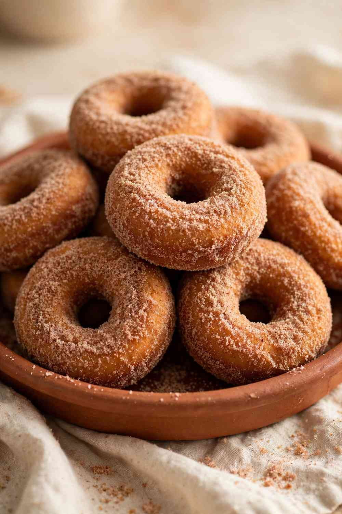
These soft, cake-like donuts are made with real apple cider, so every bite tastes of orchard apples and warm cinnamon. Baked instead of fried, they come out tender and light, then get brushed with melted butter and rolled in cinnamon sugar for a crackly sweet coat. They are best eaten the same morning, still slightly warm from the oven.
Ingredients
- 1 1/2 cups flour
- 1 tsp baking powder
- 1/2 cup apple cider
- 1 egg
- 1/3 cup sugar
- 1 tsp cinnamon
- 1/4 cup melted butter
Directions
- Preheat the oven to 350°F and grease a donut pan well with butter or cooking spray.
- In a large bowl, whisk together the flour, baking powder, sugar, and cinnamon.
- In a second bowl, whisk the apple cider, egg, and melted butter until smooth.
- Pour the wet ingredients into the dry ingredients and stir just until combined. Do not overmix, or the donuts will turn dense.
- Spoon the batter into the donut pan, filling each cavity about three-quarters full. Smooth the tops with the back of the spoon.
- Bake for 12 minutes, until the donuts spring back when lightly pressed and a toothpick comes out clean.
- Let the donuts cool in the pan for 5 minutes, then brush them with melted butter and roll them in cinnamon sugar until coated. Serve warm.
8. Smoked Salmon and Cream Cheese Bagels

This is the festive, no-cook board that balances all the sweet baking on a Christmas table: toasted bagels spread thick with cream cheese, layered with silky smoked salmon, and finished with red onion, capers, dill, and lemon. It looks elegant, takes minutes to build, and lets everyone make their own perfect bite. Set it out and let guests help themselves.
Ingredients
- 4 bagels
- 8 oz cream cheese
- 8 oz smoked salmon
- 1 red onion
- capers
- dill
- lemon wedges
Directions
- Slice the bagels in half and toast them until golden and crisp at the edges.
- Spread a thick layer of cream cheese over each toasted half, all the way to the edges.
- Drape the smoked salmon over the cream cheese in loose folds, about 2 ounces per bagel half, letting the edges overlap slightly.
- Thinly slice the red onion into rings and scatter them over the salmon.
- Sprinkle capers and fresh dill over the top, and set the lemon wedges alongside.
- Serve at once, with a squeeze of lemon over each bagel, or arrange everything on a board and let guests build their own.
9. Pecan Praline French Toast Bake

Cubed brioche soaks overnight in a cinnamon egg custard, then bakes under a buttery praline topping of pecans and brown sugar that turns crisp and caramelized in the oven. The inside stays soft and custardy while the top goes crunchy. It is a make-ahead showpiece: assemble it tonight, bake it in the morning, and serve it warm with maple syrup.
Ingredients
- 8 cups cubed brioche
- 6 eggs
- 2 cups milk
- 1 cup chopped pecans
- 1/2 cup brown sugar
- 1/4 cup butter
- 1 tsp cinnamon
Directions
- Grease a 9x13-inch baking dish and spread the cubed brioche in an even layer.
- In a large bowl, whisk the eggs, milk, and cinnamon until smooth.
- Pour the egg mixture evenly over the bread, pressing the cubes down gently so they all absorb the custard.
- In a small bowl, mix the chopped pecans and brown sugar, then scatter the mixture over the top. Dot the surface with small pieces of the butter.
- Cover the dish tightly and refrigerate overnight, for at least 8 hours.
- In the morning, preheat the oven to 350°F and let the dish sit on the counter for 15 minutes while the oven heats.
- Bake uncovered for 45 minutes, until the top is crisp and golden and the center is set. Rest for 10 minutes, then serve warm with maple syrup.
10. Cranberry White Chocolate Muffins
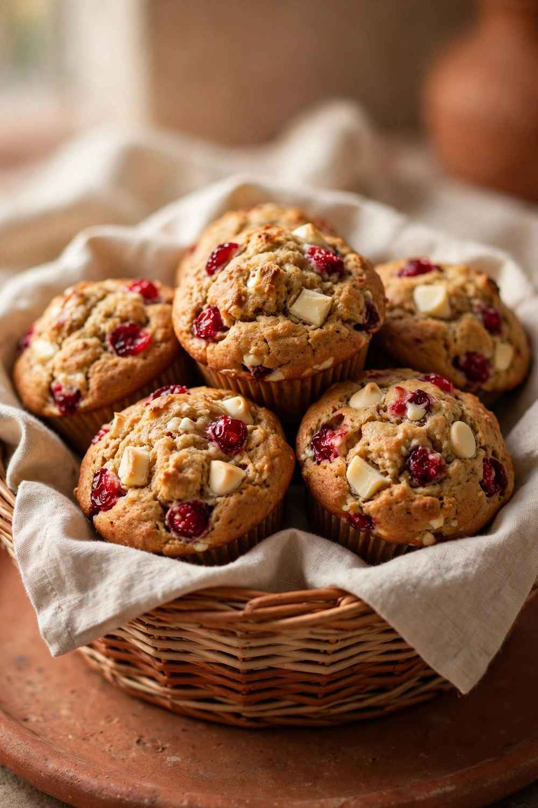
These muffins are tender and golden, with tart cranberries bursting against sweet white chocolate chips in every bite. The batter comes together in minutes and bakes into domed, bakery-style tops. They are just sweet enough for a holiday morning, and they travel well to a brunch table or a neighbor's door. Serve them warm, with butter if you like.
Ingredients
- 2 cups flour
- 1/2 cup sugar
- 2 tsp baking powder
- 1 egg
- 1 cup milk
- 1/3 cup oil
- 1 cup cranberries
- 1/2 cup white chocolate chips
Directions
- Preheat the oven to 375°F and line a 12-cup muffin tin with paper liners or grease it well.
- In a large bowl, whisk together the flour, sugar, and baking powder.
- In a second bowl, whisk the egg, milk, and oil until smooth.
- Pour the wet ingredients into the dry ingredients and stir gently just until combined. A few streaks of flour are fine; do not overmix.
- Fold in the cranberries and white chocolate chips with a spatula, mixing only until they are evenly spread through the batter.
- Divide the batter evenly among the muffin cups, filling each about two-thirds full.
- Bake for 20 minutes, until the tops are golden and a toothpick inserted in the center comes out clean. Cool in the tin for 5 minutes, then move to a rack.
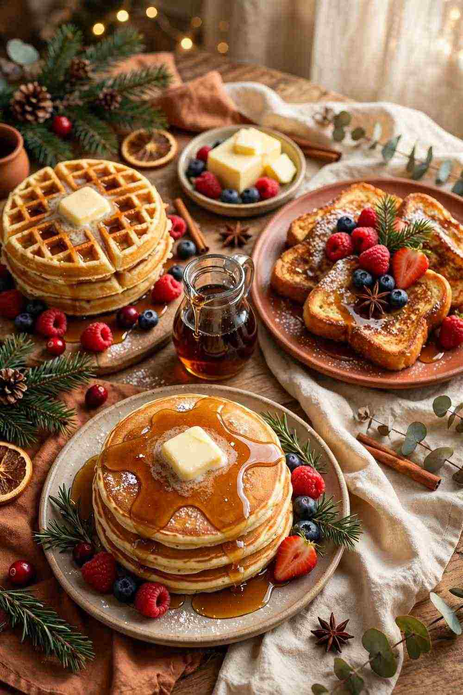
Eggs, oats & savory bakes
For mornings when you want something hearty but not heavy — eggs, oats and savory bakes that hold up on a buffet table.
11. Spinach and Feta Egg Muffins

These grab-and-go egg cups are light but satisfying: fluffy eggs baked with wilted spinach and salty crumbled feta in a muffin tin. They come out golden at the edges and soft in the middle, and they reheat beautifully, which makes them perfect for a busy Christmas morning. Make a double batch and watch them disappear from the plate.
Ingredients
- 10 eggs
- 1 cup chopped spinach
- 1/2 cup crumbled feta
- 1/4 cup milk
- salt and pepper
Directions
- Preheat the oven to 350°F and grease a 12-cup muffin tin well with butter or cooking spray.
- In a large bowl, whisk the eggs with the milk, a good pinch of salt, and a few grinds of black pepper until the yolks and whites are fully blended.
- Stir in the chopped spinach and crumbled feta, mixing until they are spread evenly through the eggs.
- Divide the mixture evenly among the muffin cups, filling each about three-quarters full. The spinach will settle a little; that is fine.
- Bake for 18 minutes, until the egg muffins are puffed, set in the center, and lightly golden at the edges.
- Let them cool in the tin for 5 minutes, then run a knife around each cup and lift them out. Serve warm, or cool and refrigerate for up to 3 days.
12. Cinnamon Apple Overnight Oats
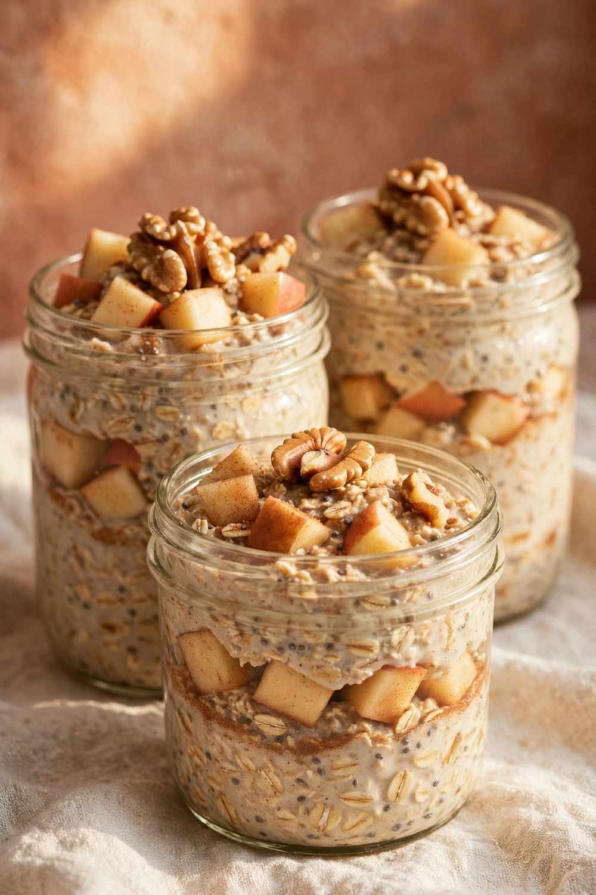
Rolled oats soak overnight in milk with diced apple, cinnamon, and maple syrup, turning thick, creamy, and gently spiced by morning. Chopped walnuts on top add the crunch the soft oats need. It is the lightest breakfast on this list and the easiest: stir it together tonight, chill it in jars, and hand one to everyone as they come downstairs.
Ingredients
- 2 cups rolled oats
- 2 cups milk
- 1 cup diced apple
- 1 tsp cinnamon
- 2 tbsp maple syrup
- 1/4 cup chopped walnuts
Directions
- In a large bowl, stir together the rolled oats, milk, diced apple, cinnamon, and maple syrup until everything is evenly mixed and the cinnamon is spread through.
- Let the mixture sit for 5 minutes so the oats begin to absorb the milk and soften.
- Divide the mixture evenly among 4 jars or small bowls.
- Cover each jar and refrigerate overnight, for at least 6 hours, until the oats are thick and creamy.
- In the morning, stir each serving well and add a splash of milk if it is thicker than you like.
- Top with the chopped walnuts just before serving, so they stay crunchy.
13. Holiday Hash Browns Casserole

This is the cheesy potato bake every holiday table needs: shredded hash browns folded with cheddar, sour cream, and cream of chicken soup, then finished with a buttery cornflake topping that bakes up shatteringly crisp. The inside stays creamy and rich while the top goes golden. It feeds a crowd from one dish and reheats well the next day.
Ingredients
- 1 bag (30 oz) frozen hash browns
- 2 cups shredded cheddar
- 1 cup sour cream
- 1 can cream of chicken soup
- 1/2 cup melted butter
- 1 cup crushed cornflakes
Directions
- Preheat the oven to 350°F and grease a 9x13-inch baking dish.
- In a large bowl, stir together the frozen hash browns, shredded cheddar, sour cream, and cream of chicken soup until evenly combined.
- Pour in the melted butter and stir again until the mixture is creamy and well mixed.
- Spread the mixture into the greased dish in an even layer, then sprinkle the crushed cornflakes evenly over the top.
- Bake for 45 minutes, until the casserole is bubbling at the edges and the cornflake topping is crisp and golden.
- Let it rest for 10 minutes before serving, so it firms up enough to spoon neatly.
14. Orange Cranberry Coffee Cake
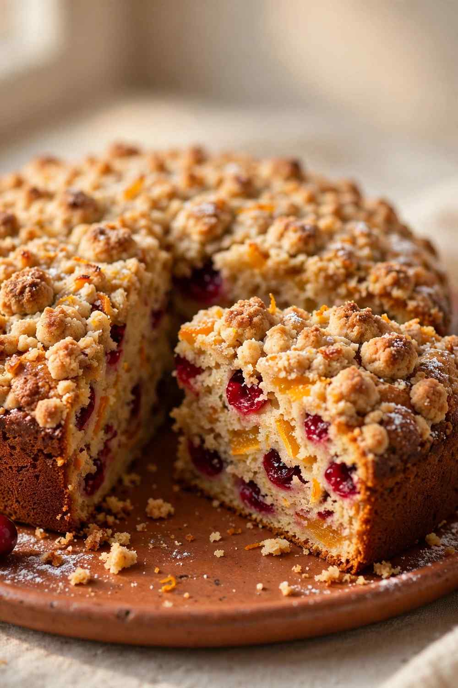
This coffee cake pairs tart cranberries and fresh orange zest with a tender sour cream crumb and a sweet streusel top. The cake stays moist for days, and the orange flavor grows stronger as it sits. Slice it, serve it with coffee, and let it anchor the sweet end of the Christmas breakfast table. It is good the next morning.
Ingredients
- 2 cups flour
- 1 cup sugar
- 1/2 cup butter
- 2 eggs
- 1 cup sour cream
- 1 cup cranberries
- zest of 1 orange
- 1/2 cup streusel topping
Directions
- Preheat the oven to 350°F and grease a 9-inch round or square baking pan.
- In a large bowl, cream the butter and sugar together with a mixer until light and fluffy, about 3 minutes.
- Beat in the eggs one at a time, then beat in the sour cream until smooth.
- Add the flour and stir gently just until combined. Do not overmix, or the cake will turn tough.
- Fold in the cranberries and orange zest with a spatula, mixing only until they are spread evenly through the batter.
- Pour the batter into the greased pan and smooth the top. Sprinkle the streusel topping evenly over the surface.
- Bake for 45 minutes, until the top is golden and a toothpick inserted in the center comes out clean. Cool in the pan for 15 minutes before slicing.
15. Bacon and Cheese Quiche

A pie crust holds a custard of eggs and milk, studded with smoky bacon and melted Swiss cheese, with just a whisper of nutmeg. The quiche bakes until the filling is set and the top is golden, then slices cleanly into wedges. Make it ahead and serve it warm or at room temperature; it feeds a holiday crowd with ease.
Ingredients
- 1 pie crust
- 6 eggs
- 1 1/2 cups milk
- 8 slices cooked bacon
- 1 1/2 cups shredded Swiss cheese
- 1/4 tsp nutmeg
Directions
- Preheat the oven to 375°F. Unroll the pie crust and press it into a 9-inch pie dish, crimping the edges. Prick the bottom with a fork.
- In a large bowl, whisk the eggs, milk, and nutmeg until smooth and well combined.
- Crumble the cooked bacon into pieces and stir it into the egg mixture along with the shredded Swiss cheese.
- Pour the filling into the prepared crust and spread it into an even layer.
- Bake for 40 minutes, until the center is just set and the top is lightly golden. The center should jiggle only slightly when you shake the dish gently.
- Let the quiche cool for 10 minutes before slicing, so the custard firms up and the slices hold their shape.
- Serve warm or at room temperature, cut into wedges.
Food safety: bake the quiche until it reaches 160°F (71°C) in the center.
Breads, waffles & biscuits
Warm breads and waffles for a slow morning — bake a loaf, fry some puffs, and let the waffle iron do the rest.
16. Chocolate Chip Banana Bread
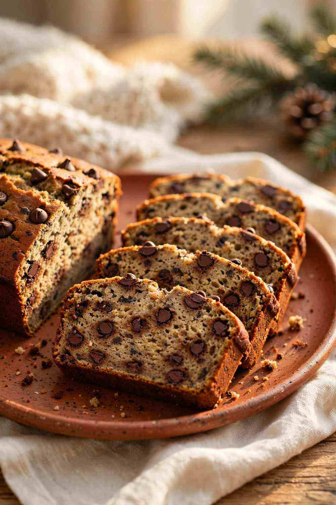
Ripe bananas and melted butter make this loaf deeply moist, with a soft crumb, a crackly golden top, and chocolate chips in every slice. It is the kind of bread that disappears fast on Christmas morning, eaten warm with butter or plain, from the board. One loaf is never enough, so bake it the day before and slice it thick.
Ingredients
- 3 ripe bananas
- 1/3 cup melted butter
- 3/4 cup sugar
- 1 egg
- 1 tsp vanilla
- 1 1/2 cups flour
- 1 tsp baking soda
- 1/2 cup chocolate chips
Directions
- Preheat the oven to 350°F and grease a 9x5-inch loaf pan.
- In a large bowl, mash the bananas with a fork until mostly smooth, with a few small lumps left for texture.
- Stir in the melted butter, sugar, egg, and vanilla until well combined.
- Sprinkle the flour and baking soda over the banana mixture and fold gently just until no dry flour remains. Do not overmix.
- Fold in the chocolate chips, then pour the batter into the greased loaf pan and smooth the top.
- Bake for 55 minutes, until the top is deep golden brown and a toothpick inserted in the center comes out clean. If the top browns too fast, tent it loosely with foil.
- Let the bread cool in the pan for 10 minutes, then turn it out onto a rack and cool completely before slicing.
17. Cinnamon Sugar Breakfast Puffs
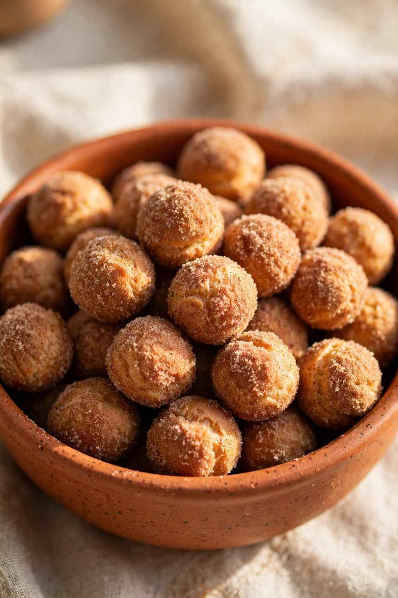
These soft little puffs taste like donut holes from a Christmas fair: tender, buttery cakes baked in a muffin tin, then brushed with melted butter and rolled in cinnamon sugar while still warm. The sugar coating crackles slightly as you bite in. They are best eaten the morning they are baked, piled in a bowl for everyone to grab.
Ingredients
- 1 1/2 cups flour
- 1/2 cup sugar
- 1 1/2 tsp baking powder
- 1 egg
- 1/2 cup milk
- 1/3 cup melted butter
- cinnamon sugar for rolling
Directions
- Preheat the oven to 350°F and grease a 12-cup muffin tin well.
- In a large bowl, whisk together the flour, sugar, and baking powder.
- In a second bowl, whisk the egg, milk, and melted butter until smooth.
- Pour the wet ingredients into the dry ingredients and stir just until combined. Divide the batter evenly among the muffin cups, filling each about two-thirds full.
- Bake for 18 minutes, until the puffs are risen and golden and a toothpick comes out clean.
- While the puffs are still warm, brush each one with melted butter and roll it in cinnamon sugar until coated. Serve warm.
18. Pear and Walnut Baked Oatmeal
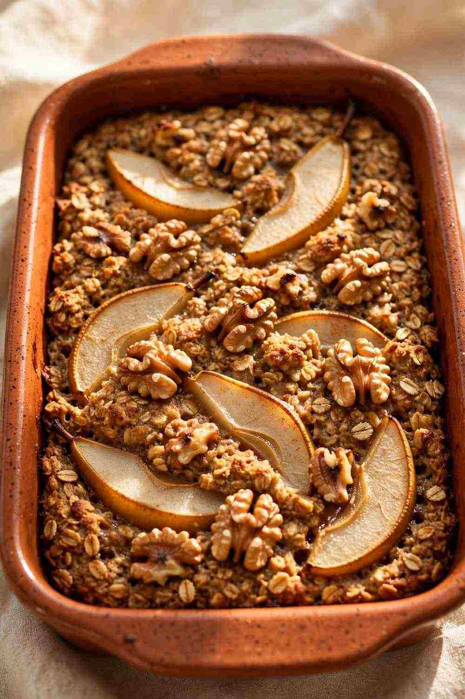
Rolled oats bake with diced pears, chopped walnuts, maple syrup, and cinnamon into a warm, nutty casserole that slices like a cake and eats like a hug. The pears soften into the oats, the walnuts stay crunchy, and it smells like a winter orchard. Serve it warm from the baking dish with extra maple syrup and a splash of milk.
Ingredients
- 2 cups rolled oats
- 2 cups milk
- 2 diced pears
- 1/2 cup chopped walnuts
- 1/4 cup maple syrup
- 1 tsp cinnamon
- 2 eggs
Directions
- Preheat the oven to 375°F and grease a 9-inch square baking dish.
- In a large bowl, whisk the eggs and milk together with the maple syrup and cinnamon until smooth.
- Stir in the rolled oats, diced pears, and chopped walnuts, mixing until everything is evenly combined. Let the mixture sit for 5 minutes so the oats begin to soak.
- Pour the mixture into the greased dish and spread it into an even layer.
- Bake for 35 minutes, until the oatmeal is set in the center and golden at the edges. A knife inserted in the center should come out mostly clean.
- Let it rest for 5 minutes, then serve warm with extra maple syrup and a splash of milk if you like.
19. Red Velvet Waffles with Cream Cheese Drizzle
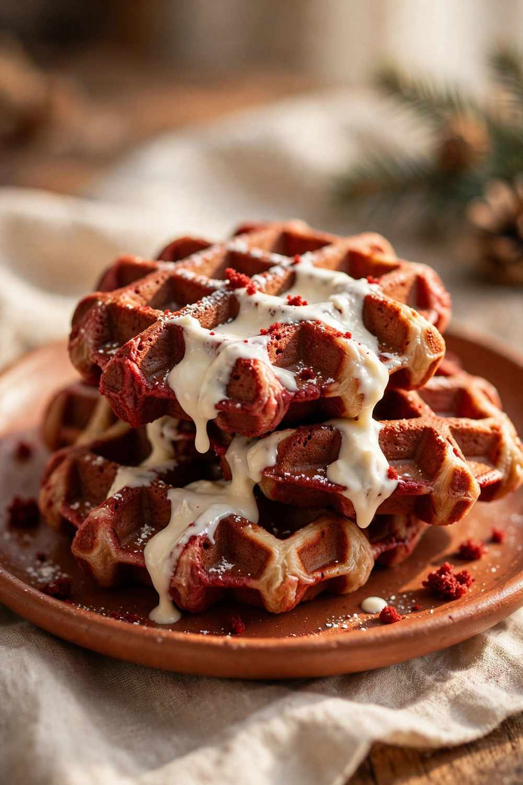
These waffles are a Christmas showpiece: deep red, crisp at the edges, and soft inside, with a cocoa warmth under the color. A sweet cream cheese drizzle melts into every square, turning each bite into something between a waffle and a slice of red velvet cake. Make them for the table and watch the camera phones come out.
Ingredients
- 2 cups flour
- 1/4 cup cocoa powder
- 2 tsp baking powder
- 2 eggs
- 1 1/2 cups milk
- 1 tbsp red food coloring
- 4 oz cream cheese
- 1/4 cup powdered sugar
Directions
- Preheat the waffle iron and grease it lightly.
- In a large bowl, whisk together the flour, cocoa powder, and baking powder.
- In a second bowl, whisk the eggs, milk, and red food coloring until smooth and evenly red.
- Pour the wet ingredients into the dry ingredients and stir gently just until combined. Do not overmix.
- Pour the batter into the hot waffle iron and cook until crisp and deep red, following your iron's instructions, usually 4 to 5 minutes per batch.
- While the waffles cook, whisk the cream cheese with the powdered sugar and a spoonful of milk until smooth and pourable.
- Serve the waffles hot, with the cream cheese drizzle spooned over the top.
20. Sausage Gravy and Biscuits

This is Southern comfort on a plate: flaky canned biscuits split open and smothered in a creamy sausage gravy, rich with browned pork sausage, black pepper, and milk. The gravy thickens slowly until it coats a spoon, and every bite is salty, peppery, and deeply satisfying. It is the heartiest breakfast on this list, made for cold Christmas mornings.
Ingredients
- 8 canned biscuits
- 1 lb pork sausage
- 1/4 cup flour
- 2 1/2 cups milk
- salt and black pepper
Directions
- Bake the biscuits as directed on the can, until golden brown. Set them aside and keep them warm.
- While the biscuits bake, crumble the pork sausage into a large skillet and cook over medium-high heat, breaking it up as it cooks, until browned and cooked through, about 8 minutes.
- Sprinkle the flour over the cooked sausage and stir constantly for 1 minute, until the flour is absorbed and no white streaks remain.
- Slowly pour in the milk a little at a time, stirring constantly so no lumps form.
- Reduce the heat to medium-low and simmer the gravy for 5 to 8 minutes, stirring often, until it thickens enough to coat the back of a spoon.
- Season with salt and plenty of black pepper, tasting as you go.
- Split the warm biscuits, lay them on plates, and spoon the gravy generously over the top. Serve at once.
Food safety: cook the pork sausage to 160°F (71°C) — check with a food thermometer.
Toasts, treats & overnight oats
The finishing touches — quick toasts, dippable sticks and a pull-apart wreath, plus overnight oats for the lightest eaters.
21. Cranberry Brie Toast

Sourdough toast gets layered with creamy brie and tart cranberry sauce, then broiled briefly until the cheese melts into the bread. Honey and fresh thyme finish it with sweetness and a herbal note. It is sweet, tart, salty, and rich all at once, and it looks like art. Serve it as a starter or a light holiday breakfast.
Ingredients
- 4 slices sourdough
- 8 oz brie
- 1/2 cup cranberry sauce
- 2 tbsp honey
- fresh thyme
Directions
- Toast the sourdough slices until golden and crisp at the edges.
- Cut the brie into slices, about 2 ounces per slice, and layer them over the warm toast.
- Spoon the cranberry sauce evenly over the brie.
- Arrange the toasts on a rimmed baking sheet lined with parchment and broil for 1 to 2 minutes, watching closely, until the brie melts and just begins to bubble. Do not walk away; broilers work fast and the toast can burn in seconds.
- Remove from the oven and drizzle each toast with honey.
- Sprinkle fresh thyme leaves over the top and serve at once, while the brie is still warm and runny.
22. Pumpkin Spice French Toast Sticks
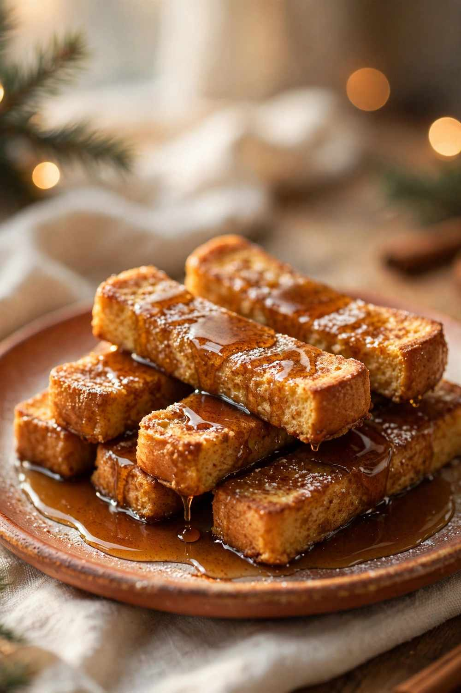
Texas toast cut into sticks soaks in a pumpkin custard spiced with pumpkin spice, then fries in butter until golden and crisp outside and soft inside. They are made for dipping in warm maple syrup, and kids love eating them with their hands. Make a big batch on Christmas morning, because the plate empties faster than you expect.
Ingredients
- 8 slices Texas toast
- 3 eggs
- 1/2 cup milk
- 1/2 cup pumpkin puree
- 1 tsp pumpkin spice
- butter for frying
Directions
- Cut each slice of Texas toast into 3 or 4 even sticks.
- In a wide, shallow dish, whisk the eggs, milk, pumpkin puree, and pumpkin spice until smooth.
- Melt a generous knob of butter in a large skillet over medium heat until it foams.
- Dip each stick into the custard, turning to coat all sides, then let the excess drip off for a second so the bread is soaked but not falling apart.
- Fry the sticks in the butter, turning them as they brown, for 2 to 3 minutes per side, until deep golden all over. Work in batches and add more butter as needed.
- Serve hot with warm maple syrup for dipping.
23. Avocado Toast with Poached Egg
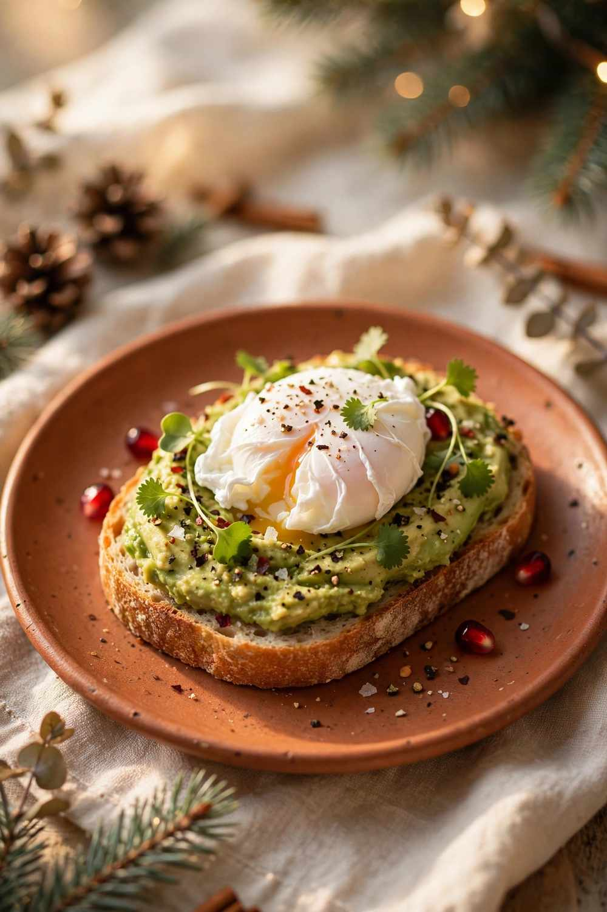
This is the lightest plate on the Christmas table: crisp sourdough spread with creamy avocado mashed with lemon and salt, topped with a poached egg whose yolk runs golden over everything. Red pepper flakes add a gentle heat. It is fresh, simple, and satisfying, and it gives the morning a bright, green counterpoint to all the cinnamon and sugar.
Ingredients
- 4 slices sourdough
- 2 ripe avocados
- 4 eggs
- red pepper flakes
- lemon juice
- salt
Directions
- Toast the sourdough slices until golden and crisp.
- Halve the avocados, remove the pits, and scoop the flesh into a bowl.
- Mash the avocado with a fork, then stir in a squeeze of lemon juice and a good pinch of salt. Leave it a little chunky.
- Bring a wide pot of water to a gentle simmer, with small bubbles rising but no rolling boil.
- Crack each egg into a small cup, then slip it gently into the simmering water. Poach for 3 minutes, until the whites are set and the yolks are still runny.
- Spread the mashed avocado thickly over each slice of toast.
- Lift a poached egg onto each toast with a slotted spoon, letting the water drain off. Sprinkle with red pepper flakes and a little more salt, and serve at once.
24. Cinnamon Roll Wreath

Refrigerated cinnamon rolls are arranged in a ring and baked into a pull-apart wreath, with pecans and brown sugar, then finished with icing and red and green sprinkles. It looks like a holiday decoration and eats like the best part of a cinnamon roll, soft, warm, and sticky. Set it on the table and let everyone pull off a piece.
Ingredients
- 2 cans refrigerated cinnamon rolls
- 1/2 cup chopped pecans
- 1/4 cup brown sugar
- icing from the cans
- red and green sprinkles
Directions
- Preheat the oven to 350°F and line a large baking sheet with parchment paper.
- Open both cans of cinnamon rolls, set the icing cups aside, and separate the rolls.
- Arrange the rolls in a ring on the baking sheet, with the edges touching so they bake together into a wreath. Leave a hole in the center.
- Sprinkle the chopped pecans and brown sugar evenly over the ring.
- Bake for 25 minutes, until the rolls are puffed and golden brown and cooked through in the center.
- Let the wreath cool on the sheet for 5 minutes, then warm the reserved icing slightly and drizzle it over the top.
- Scatter red and green sprinkles over the icing and serve warm, letting everyone pull off their own piece.
25. Hot Cocoa Overnight Oats

Rolled oats soak overnight in milk with cocoa powder and maple syrup, turning into a thick, chocolatey breakfast. Mini marshmallows and crushed candy cane go on top in the morning, melting just slightly into the cold oats. It is the easiest recipe on this list and the most fun to eat, especially for kids on Christmas morning.
Ingredients
- 2 cups rolled oats
- 2 cups milk
- 3 tbsp cocoa powder
- 2 tbsp maple syrup
- 1/2 cup mini marshmallows
- crushed candy cane
Directions
- In a large bowl, stir together the rolled oats, milk, cocoa powder, and maple syrup until the cocoa is fully mixed in and no dry streaks remain. Let the mixture sit for 5 minutes so the oats begin to absorb the milk.
- Divide the mixture evenly among 4 jars or small bowls.
- Cover each jar and refrigerate overnight, for at least 6 hours, until the oats are thick and creamy.
- In the morning, stir each serving and add a splash of milk if it is thicker than you like.
- Top with the mini marshmallows and a scatter of crushed candy cane.
- Serve cold, straight from the fridge.

Make-ahead & serving tips
Assemble overnight recipes the evening before so Christmas morning starts with the oven, not the mixing bowl. Bake casseroles and bakes in the center of the oven and let them rest for 10 minutes before slicing so they hold together. Keep pancakes and waffles warm on a low oven rack while you cook the next batch, and set out toppings — maple syrup, powdered sugar, berries and butter — so everyone builds their own plate. Most of these recipes keep well: store leftovers covered in the fridge for up to 3 days, and reheat gently in the oven or microwave.
Related articles
More roundups from the same table:
- 25+ Christmas Side Dishes for Your Holiday Table — roasted vegetables, creamy potatoes, stuffing and cranberry sauce.
- 20+ Christmas Air Fryer Recipes for Easy Holiday Cooking — crispy appetizers, roasted vegetables and festive desserts.
- 30+ Christmas Cookie Recipes Everyone Will Love — classic, chocolate, spiced, filled and decorated cookies.
- 35+ Easy Christmas Appetizers for a Crowd — dips, bites, cheese boards and warm starters for your holiday party.
Keep exploring
- Browse the Breakfast & Brunch roundups — slow mornings and weekend brunch tables.
- Browse all six categories — breakfast, lunch and dinner, desserts, air fryer, healthy recipes, and appetizers.
- More about the kitchen — what The Tasty Recipe Co is and how it works.
About The Tasty Recipe Co: Learn how we research, organize and review our food collections — see our About Us and Editorial Policy pages.
Recipe results can vary with ingredients, equipment, and technique. See our Disclaimer for food-safety and allergy notes.